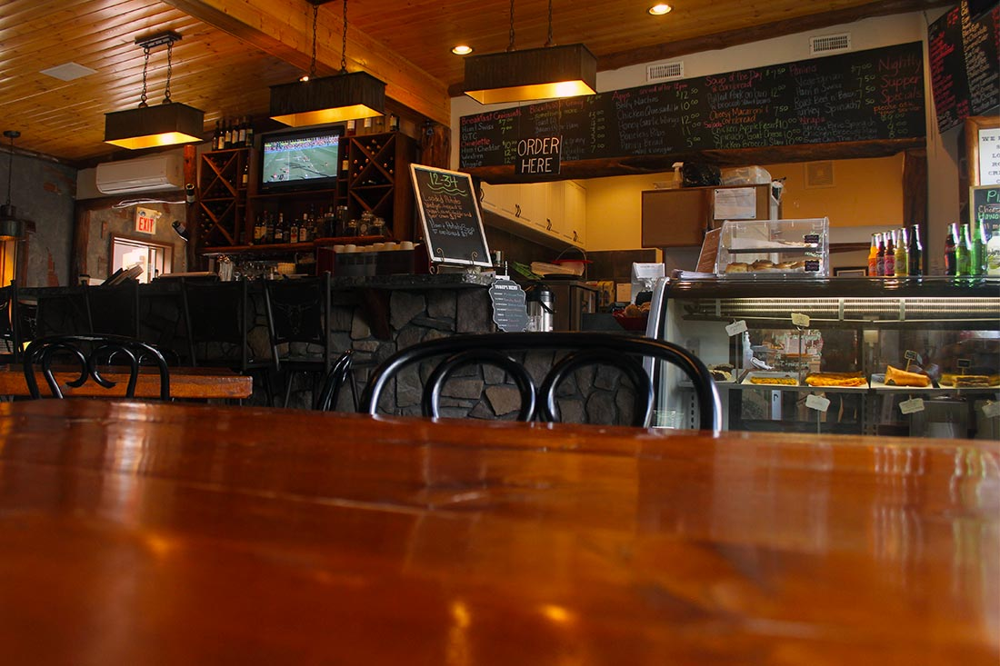
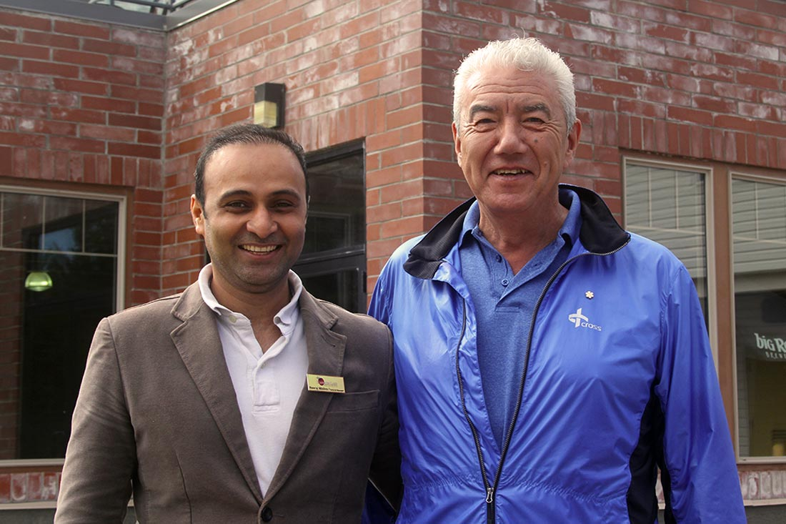
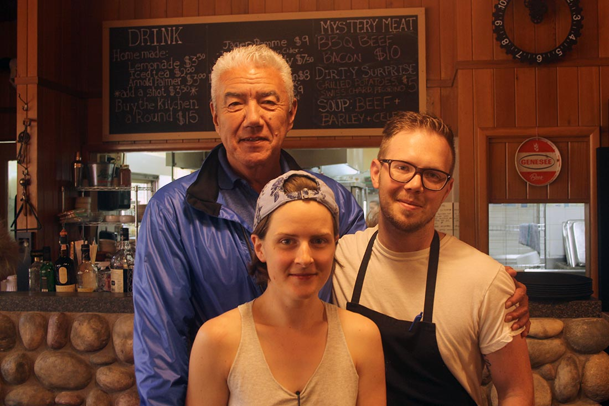
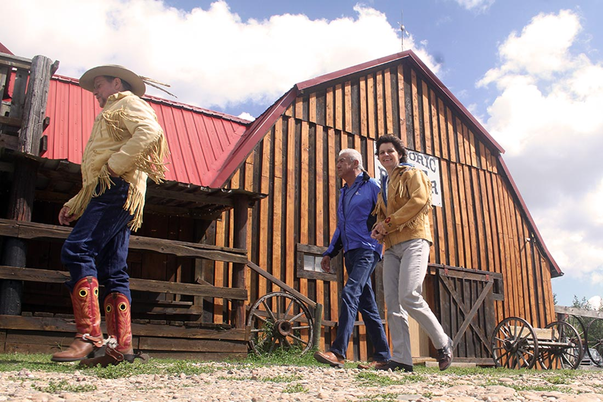
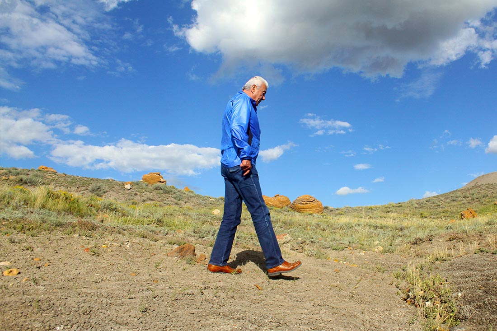

SCROLL TO EXPLORE
You won’t discover Elkwater if you don’t have time. Life is an adventure out here.
Nearby there is Reesor Lake, stocked with trout (no boats allowed). Or you can go to Cypress and fish for pike (motor boats allowed). Hike Horseshoe Canyon. Whatever your choice, be aware of the danger because if you’re in the mood for homemade ice cream, you best plan your time accordingly. Make sure you have enough or you will be in danger of being out of luck! Here’s the secret. First rush happens @ 2:00pm. If you miss that, you will have to plan on 8:00pm. Remember 2-8 rush for ice cream… In the eve you should come to see the stars…or the lightning…or meteor showers.

Can you say 1, 2-34? Been around for 90 years…used to fuel and fill’er up, now it fills you up. Some of the best homemade soup and homemade pies found anywhere. “Cool” - that’s the name of the first of your fine-dining experiences in Elkwater…a wonderful welcome after a morning skip to the loo.
Meet Paulette…the matriarch of the family that owns the 1,2-34…diesel was the birth of the biz. Now the diesel is gone, the biz is not…the kaleidoscope of customers who happen upon 1,2-34 are welcomed with a charismatic and genuine sense of belonging. Clear local hospitality rings like a bell…
12-34 sells a little bit of anything…for peeps that hike, trail ride, golf, ski, fish… - Tom

Neeraj Mishra…Elkwater Lake Lodge. He came from India…his family is in the hospitality industry. He trained to be an engineer…worked in the oil patch then returned to the hospitality world…
“I came looking for the Cypress Hills. I drove with my Uncle for miles and miles on flat land. I didn’t think this was going to work! It took a long time to see the Hills. Now we’re here to stay. I’ve been here since May 2016. My wife and I have 2 girls (twins, 2.5 yrs) and a boy (1 yr). I noticed everybody keeps going west if they don’t stop here. If they stop here they don’t want to leave”.
I ask Neeraj what keeps him in Elkwater. “I get a chance to engage with people…make them feel important…to serve the guests. I want to be part of a good experience - engagement and bond. I believe if we bond, we forgive mistakes. If not, you won’t”. Neeraj is a good spirit who will welcome you whether you live here or come here. You will be better for it. Oh! By and by, a great place to get a meal and a brew is Buglers. - Tom

Becky and Alex became part of this culture…worked hard at working hard for 2 years. She met Alex in Toronto where they both worked in the fine-dining industry for 6 years. They moved back here from TO…righteously independent of each other to dependent…loving each other and the restaurant. Loving to serve, they bought The Camp as it was…feeling a little weird…but adventurous. T&B decided to make the Camp who they are. The menu is weird. Everything but the ketchup is homemade - including the bacon and the eggs. Even though it’s the old way, it’s new here. It took a year to catch on – fine-dining homemade. Fine-dining indeed! Just ask anyone who has shared a meal at The Camp…
For a second opinion track down Beryl Landon. She’s the one with the bathtub cut-out on her front lawn. She and her husband came from New Zealand 45 years ago. Once they saw 5 combines in motion at harvest, her curiosity got the best of her. It never got satisfied. She says, “those kids (Becky and Alex) are the best. And they never stop working. We love them” - Tom

Scott and Theresa from Reesor Ranch. The ranch has been in the family since 1904. Scott left to discover the world in 1991 and found that the world was right here. It’s just him and Theresa here now…almost. The horses, the cats, the dogs, the guests, the neighbors, the herd, the wide open range, the ever-evolving challenge. Other than that, nothing changes but the seasons.
Scott looked out at the herd 20 years ago and decided he better go into Calgary and ‘cut out a filly’. Theresa and Scott have been together ever since. The thing that is fluid about these days are the guests…
The Ranch is a beautiful peaceful place to “just be”. About 2500 guests come to “just be” every year.
Theresa and Scott live to roll out the carpet to the poor and the rich. People arrive here with a lot of handicaps and leave a lot behind when they go. Some come feeling fortified and others to escape the fort…
“It’s simple, safe and frugal here. There was only once when I wondered whether I should get guns and lock the gate. But it was Theresa’s calming that changed all that. Now the biggest worry out here is which piece of tin foil to throw away.
There is history out under the noonday sun and the stars. Artifacts, mystery stones, teepee circles…it is rare we feel comfortable guiding guests there as we feel we are the custodians of that history. We have room for 58 guests. If you come here, you come home to the open field and the deep bush. We are the end of the road. If you lock your doors here, you lock yourself in. We are tied to the land. Some come here to work. When they leave, we all feel lucky they came.” The poem that follows was shared by Scott and written by Scott’s mom. - Tom

Lastly we went to Red Rock Coulee… Some things are left behind or misplaced. To me, these were the tops of hoodoos with no bottoms. Maybe they fell out of the creator’s pocket? Finders-keepers I say. Maybe lost, but not forgotten. Unforgettable…but you have to see it for yourself… - Tom
THE LOCATION:
Explore other locations :